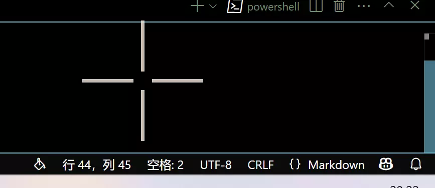
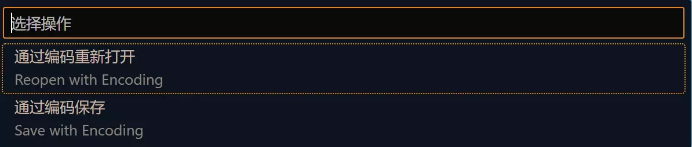
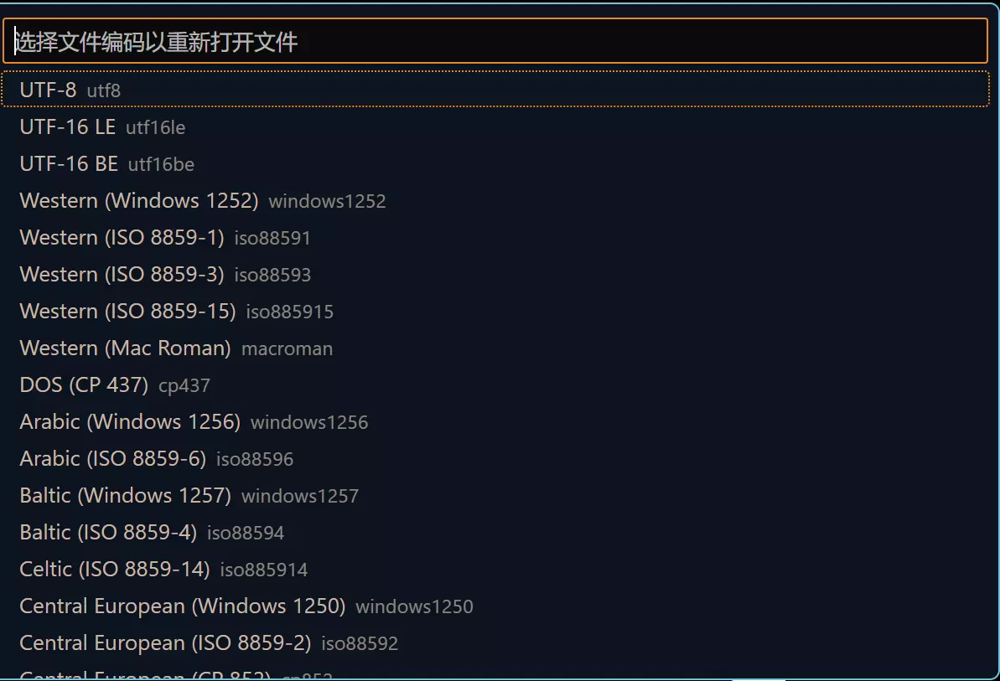

乱码问题解决
前言
注释应当是英文的，输出也应当是英文的，但是实际上作者在很多时候为了方便，就会直接进行中文的注释和输出的操作，自然也会有乱码问题的出现。 在一段时间之前，作者的朋友也出现了乱码问题，显然作者是没有成功解决，这是由于作者本人之前的一贯操作是，编码出现问题那就改成UTF-8，改完就没有问题了，但是实际上，这是作者对于编码的某种不熟悉造成的，这样的操作显然不能正确的解决乱码问题。在查阅了一些资料之后，作者对于乱码问题有了更加深入的了解，因此这里写一个简短的记录。
产生原因
比较通俗的理解一下乱码问题，计算机存储数据依靠一大串的01010101，换句话说，不管是什么程序、数据、图像、音乐等所有的一切，离远了看都是好多多的01。
在这样的前提下，计算机就需要通过不同的方式展示出不同的01表示的含义，在这种情况下，就需要进行编码和解码。
那么乱码产生的原因就非常清楚了，就是编码格式和解码格式的不一致。
解决方式
知道了问题的产生原因之后，解决方式就比较简单了，只要想办法统一编码和解码一致就可以了，因此在相当长的一段时间里，作者执行的操作都是改成UTF-8编码。
这个操作在某些时候十分的有效，但是总会遇到一些情况我们只能修改编码段或者只能修改解码端，在这种情况下，还是需要一些知识来判断究竟是出现了怎么样的编码和解码问题。
情况判断
一般情况下，可以通过乱码的样式来进行编码和解码格式的判断，在中文系统下，比较常用的有GBK和UTF-8格式的编码，当不一致的时候，会出现下列情况：
| 编码 | 解码 | 产生乱码 | 原码示例 | 乱码示例 |
|---|---|---|---|---|
UTF-8 |
GBK |
形如古文的乱码，可能会夹杂形如日文韩文类的字符 | 你好 世界！ | 浣犲ソ 涓栫晫锛 |
GBK |
UTF-8 |
形如黑色小方块的乱码 | 你好 世界！ | ��� ���磡 |
此外还有二次解码的情况，这时产生的乱码又变为：
| 编码 | 一次解码 | 二次解码 | 产生乱码 | 原码示例 | 乱码示例 |
|---|---|---|---|---|---|
GBK |
UTF-8 |
GBK |
大部分是锟斤拷的乱码 | 你好 世界！ | 锟斤拷锟� 锟斤拷锟界！ |
UTF-8 |
GBK |
UTF-8 |
在字符串长度为奇数时末尾会变为问号 | 你好 世界！ | 你好 世界�? |
常见的问题和常用解决方式
Vscode切换单个编码格式
Vscode下的保存方式一般为UTF-8格式，这种编码格式也比较兼容，需要的时候可以进行单个文件切换编码，要进行修改可以在右下角点击编码格式进行修改  点击当前的编码格式在顶部会出现  此时选择想要进行的操作，将会出现  选择想要的编码格式即可。
{% notel red Warn %} 需要注意的是，切换编码之后，原有的中文字符都会变为乱码，因此要相对谨慎的操作，可以新建一个文件，切换为想要的编码之后把代码复制进去。
C语言下显式指定
Windows下终端输出大多是GBK编码，而最容易出现乱码问题的莫过于C语言和C++类语言，在这种情况下可以显式的指定终端以UTF-8方式输出，例如：
// Note 该文件保存编码为`UTF-8`,如果切换编码格式，原有的中文会全部变为乱码，在这种情况下，不妨显式的指定`UTF-8`格式输出
#include <stdio.h>
int main()
{
SetConsoleOutputCP(65001); //显式指定终端解码格式为UTF-8
printf("你好 世界!");
return 0;
}
后记
编解码的格式显然远远不止本文提到的内容，不过暂时知道这些就足够了，后续会进行补充的。